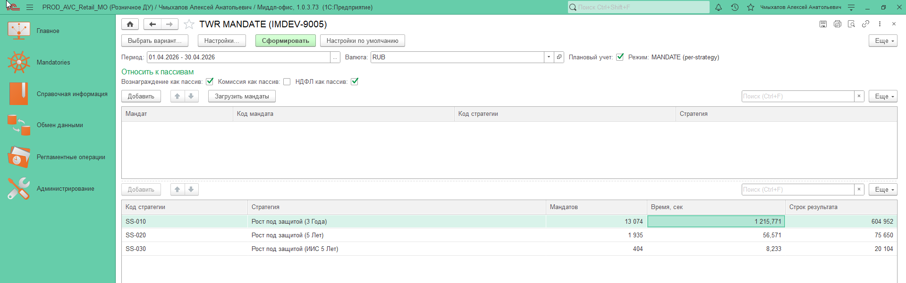
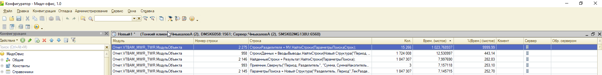
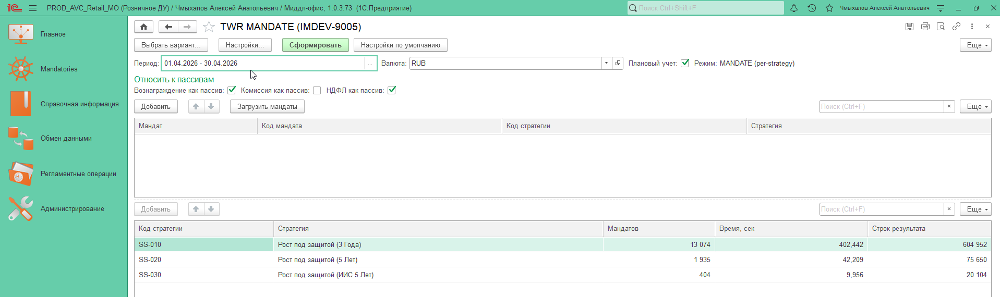
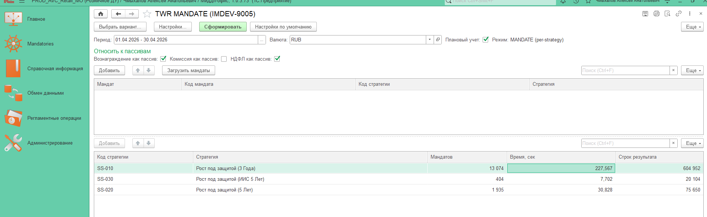
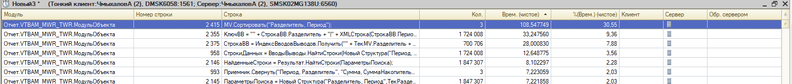
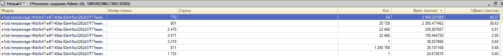
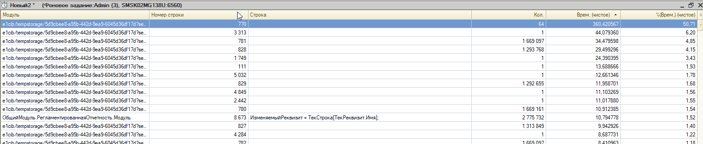
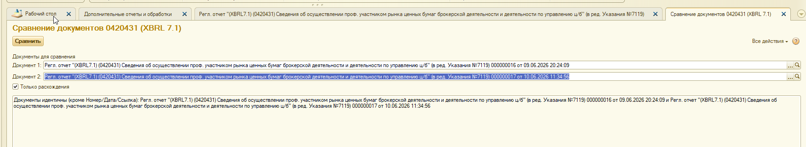

IMDEV-9005 |
Источники:
Замеры 431 форма Т-1 в журнал регистрации.docx,
Тесты_замеры_9005.docx |
Сгенерирован: 02.07.2026
Раздел 1.1 формы 0420431 (Раздел1_Подраздел1_1) содержит сведения
по инвестиционным стратегиям: идентификатор, наименование, доходность стратегии, число клиентов,
стоимость активов, временной горизонт.
Поле ДоходностьСтратегии рассчитывается в базе МО через показатель TWR
(Time-Weighted Return). Обработка ДУ вызывает ВТБ_РасчетДоходностиСервер.TWR по COM,
внутри МО выполняется Отчет.VTBAM_MWR_TWR.РасчетTWR.
Суть проблемы: в функции РасчетTWR таблица значений MV имела
неверно объявленный индекс. Поиск строк шел по одному полю
Разделитель, а индекс был по двум полям "Разделитель, Период".
Платформа 1С не использовала индекс, и каждый вызов MV.НайтиСтроки превращался
в полный перебор таблицы.
Исправление: одна строка в конфигурации МО — замена индекса на
MV.Индексы.Добавить("Разделитель"). Алгоритм расчета TWR не менялся.
| Поле раздела 1.1 | Источник | Зависимость от TWR/МО |
|---|---|---|
ИдентификаторСтратегии | Данные МО + префикс И_ | косвенно |
НаименованиеСтратегии | Данные МО | косвенно |
ДоходностьСтратегии | TWR_Бенчмарк из результата TWR | напрямую |
КоличествоКлиентов, СтоимостьАктивов | агрегат по договорам ДУ | нет |
ВременнойГоризонт | справочник стратегий МО | косвенно |
Блок СформироватьВТ_ДанныеПоСтратегиям занимал 88,4% общего времени
заполнения отчета (5 393 сек из 6 097 сек на среде т-1). Внутри него TWR и поиск по результату TWR —
главные потребители. Ускорение РасчетTWR в МО напрямую сокращает время получения
ДоходностьСтратегии для строк раздела 1.1.
Обработка внЗаполнениеРеглОтчетаПоДоговорамДУ_0420431_71 в базе ДУ
подключается к внешним базам МО через COM-коннектор. Расчет доходности:
ДанныеДоходности = Соединение.ВТБ_РасчетДоходностиСервер.TWR(
НачалоПериодаTWR, ОтчетОбъект.КонецПериода,
Соединение.Справочники.Валюты.RUB, ВознаграждениеКакПассив,
?(ТипУчета = "Плановый", Истина, Ложь),
МассивМандатов, ТекущаяСтрока.Стратегия, "MANDATE",
КоммисияКакПассив, НДФЛКакПассив);
Параметры среды т-1 (из docx): Srvr='SMSK02MG138U'; Ref='AVC_PP_DU',
фоновое задание Admin (3).
Для проверки исправления индекса без влияния обработки ДУ использован внешний отчет
внVTBAM_TWR_MANDATE на базе PROD_AVC_Retail_MO,
период 01.04.2026 - 30.04.2026, режим MANDATE (per-strategy).
| Инструмент | Где | Что фиксирует |
|---|---|---|
| Замер производительности 1С | Конфигуратор / отладчик | Строки BSL, число вызовов, чистое время |
| Журнал регистрации | ДУ | Событие IMDEV-9005.Замеры |
ERF внVTBAM_TWR_MANDATE | МО retail | Время TWR по стратегиям SS-010/020/030 |
БЫЛО Отчет VTBAM_MWR_TWR, функция РасчетTWR,
строка 2275:
// Индекс не совпадал с полем поиска:
MV.Индексы.Добавить("Разделитель, Период");
// В цикле по разделителям — линейный поиск:
ПараметрыПоискаСтрок = Новый Структура("Разделитель", ТекРазделитель.Ключ);
СтрокиРазделителя = MV.НайтиСтроки(ПараметрыПоискаСтрок);
СТАЛО Одна строка заменена:
MV.Индексы.Добавить("Разделитель");
Почему это работает: НайтиСтроки ищет только по полю Разделитель.
Составной индекс "Разделитель, Период" платформой для такого поиска не применялся —
каждый из 14 869 вызовов сканировал всю таблицу MV (тысячи мандатов x сотни дней).
Код индекса MV в конфигурации МО (после исправления)
| Стр. | Код | Вызовов | БЫЛО, сек | % РасчетTWR | СТАЛО |
|---|---|---|---|---|---|
| 1940 | ДанныеTWR = РасчетTWR(MV, ВводыВыводы) |
1 | 11 353 | 84,9 | существенно быстрее |
| 2275 | СтрокиРазделителя = MV.НайтиСтроки(...) |
14 869 | 1 333 | 90,9 | исчезла из топа |
Источник: Замеры 431 форма Т-1 в журнал регистрации.docx, прогон старого алгоритма, среда т-1, май 2026.
Три этапа на одних и тех же стратегиях (ERF внVTBAM_TWR_MANDATE):
ДоходностьПоМандатам)РасчетTWR (МО)| Стратегия | Мандатов | БЫЛО, сек | СТАЛО, сек | СТАЛО-2, сек | Выигрыш БЫЛО->СТАЛО-2 |
|---|---|---|---|---|---|
| SS-010 Рост под защитой (3 Года) | 13 074 | 1 215,8 | 402,4 | 227,6 | -81,3% |
| SS-020 Рост под защитой (5 Лет) | 1 935 | 56,6 | 42,2 | 30,8 | -45,6% |
| SS-030 Рост под защитой (ИИС 5 Лет) | 404 | 8,2 | 10,0 | 7,7 | -6,1% |
| ИТОГО (3 стратегии) | 15 413 | 1 280,6 | 454,6 | 266,1 | -79,2% |
БЫЛО TWR MANDATE + профилировщик МО


Доминирует MV.НайтиСтроки на стр. 2275
СТАЛО Оптимизация обработки ДУ

Индекс ДоходностьПоМандатам на стороне ДУ (стр. 801)
СТАЛО-2 Исправление индекса MV в МО


Стр. 2275 больше не в топе профилировщика
Исправление индекса MV — часть комплекса оптимизаций. На полном прогоне ДУ (т-1, май 2026):
| Метрика | БЫЛО | СТАЛО | Источник ускорения |
|---|---|---|---|
СформироватьВТ_ДанныеПоСтратегиям (данные для 1.1) |
5 393 сек (88,4%) | 508 сек | МО + ДУ |
TWR COM-вызов (стр. 770, 64 раза) |
2 949 сек | 360 сек | МО-индекс MV |
НайтиСтроки по доходности (стр. 801) |
2 355 сек (25 729 выз.) | ~34 сек (стр. 781) | ДУ-индекс |
| Общее время профилировщика | 6 097 сек (~1 ч 42 мин) | 711 сек (~12 мин) | комплекс |
| Время на стене (финальный прогон 10.06.2026) | ~1 ч 54 мин | ~20 мин (11:30-11:49) | комплекс |
Профилировщик ДУ — БЫЛО: TWR и НайтиСтроки доминируют

Профилировщик ДУ — СТАЛО: TWR 360 сек, индекс 781 вместо НайтиСтроки 801

Из Тесты_замеры_9005.docx (локальная база WIM_DU):
| Участок | Стр. | Доля времени |
|---|---|---|
СформироватьВТ_ДанныеПоСтратегиям (TWR + поиск) | 257 / 801 / 832 | 63% (50% TWR + 10% НайтиСтроки) |
ЗаполнитьРаздел_1 (включая 1.1) | 260 | 20% |
| Сценарий | Период | Длительность |
|---|---|---|
| До оптимизаций | февраль 2026 | ~13 мин |
| После опт. 1-2 (без параллели) | февраль 2026 | ~10 мин |
Сравнение документов 0420431 обработкой внСравнение0420431
(док. 000000016 старый алгоритм vs 000000017 оптимизированный):
Документы идентичны (кроме Номер / Дата / Ссылка).
Поле ДоходностьСтратегии в разделе 1.1 не изменилось — ускорение достигнуто
без изменения бизнес-результата.
Регрессионное сравнение (из docx)

ДоходностьСтратегии рассчитывается
через COM-вызов TWR, внутри которого работает РасчетTWR с таблицей MV."Разделитель, Период" при поиске только по Разделитель.
14 869 вызовов НайтиСтроки занимали 1 333 сек (90,9% РасчетTWR).MV.Индексы.Добавить("Разделитель")
в конфигурации МО. Логика расчета не менялась.IMDEV-9005 | Индекс MV в МО для раздела 1.1 | 02.07.2026 | полное сравнение БЫЛО/СТАЛО | итоговый отчет разработки